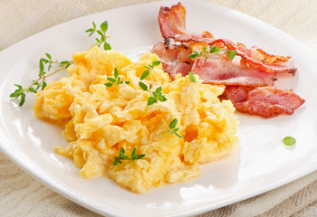

Scrambled eggs with bacon

Why should you prepare this?
Are you tired of sweet breakfasts? Why not to prepare healthy and fast meal, that will feed you and bring you a lot of proteins and healthy fats?
Scrambled eggs are popular all over the world, and you can make them in many ways, so they never get boring.
Ingredients:
- 4 eggs
- 1 tablespoon of butter
- 4 spices of bacon
- A pinch of salt
Steps:
- Take a pan, put butter into pan and turn the heat to medium-low.
- Once the butter is melted and foaming, add all slices of bacon there and fry it.